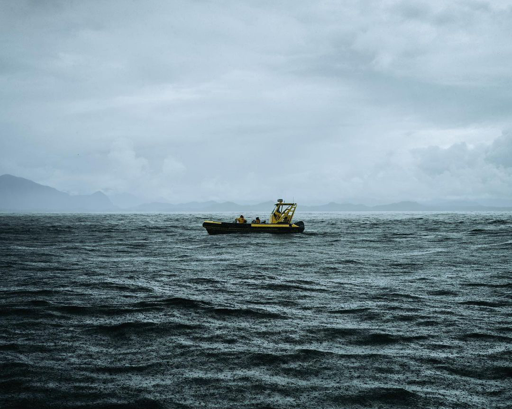
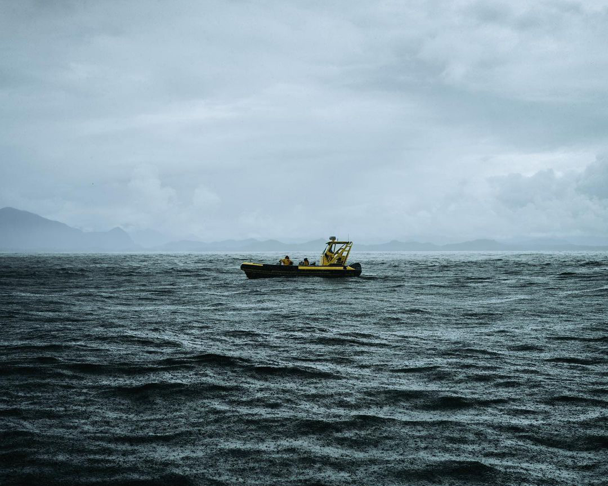
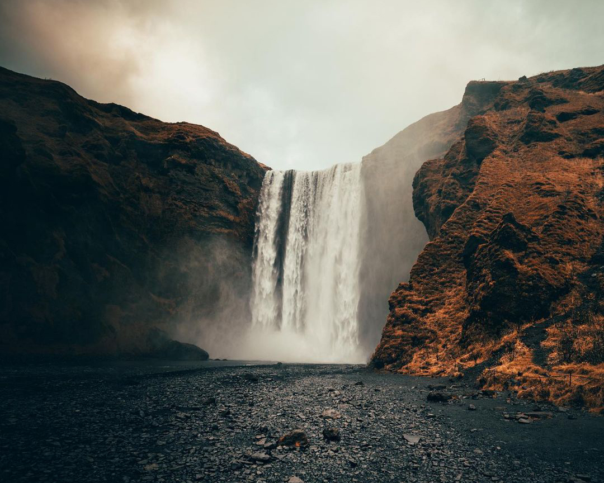
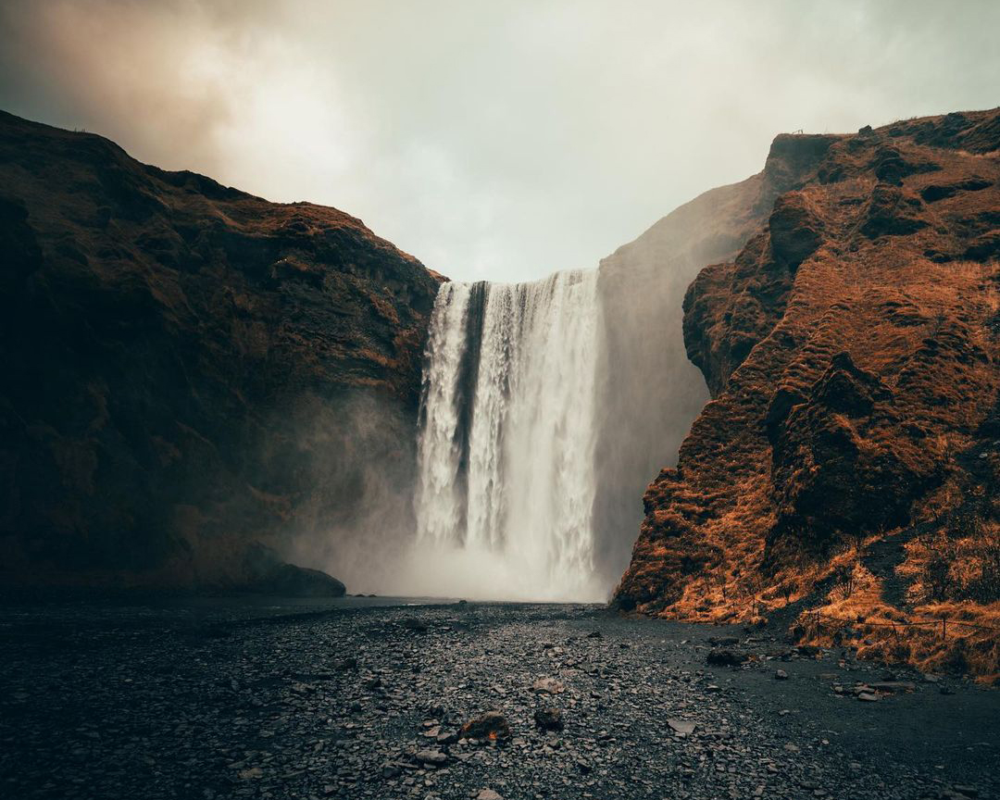

Planet Earth only consists of life in the whole Solar system.The place where we live.The rocks make up the earth that has been around for billions of years. Similarly, water also makes up the earth. In fact, water covers 70% of the surface. It includes the oceans that you see, the rivers, the sea and more.
The ocean covers 70 percent of the Earth's surface. It contains about 1.35 billion cubic kilometers (324 million cubic miles) of water, which is about 97 percent of all the water on Earth. The ocean makes all life on Earth possible, and makes the planet appear blue when viewed from space. Earth is the only planet in our solar system that is definitely known to contain liquid water.
 

The ocean covers 70 percent of the Earth's surface. It contains about 1.35 billion cubic kilometers (324 million cubic miles) of water, which is about 97 percent of all the water on Earth. The ocean makes all life on Earth possible, and makes the planet appear blue when viewed from space. Earth is the only planet in our solar system that is definitely known to contain liquid water.
The mighty chunks rise all over the world, including the oceans. They usually have steep, sloping sides and sharp or rounded ridges, and a high point, called a peak or summit. Most geologists classify a mountain as a landform that rises at least 1,000 feet (300 meters) or more above its surrounding area. A mountain range is a series or chain of mountains that are close together.
 
